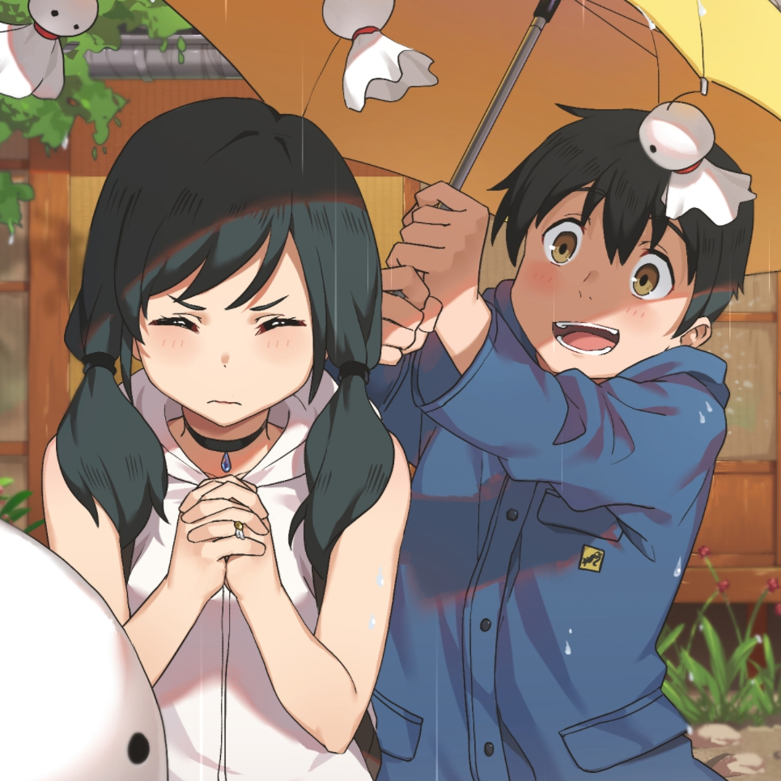

性格特点：外人看来有些失控的少年。出门时仅带著一个黄色小包包离家，并携带着《麦田里的守望者》（村上春树译）。 杯面习惯泡2分钟就食用。习惯在Yahoo奇摩知识+询问各种问题，并希望在上面获得解答奇摩和晴女上的账号分别是TOKYOBOY0701和TokyoBoy0701。
评价：他是个非常直率的人。不过也因为注意不到自己周围的情况，因此旁人看来是个常给人添麻烦的孩子吧。 他有着自己独特的正义感，还有很强的共情心愿意为他人奔走努力，从做人的角度令人十分尊敬。
经典台词：有时天边有黑云，而且云片很厚，太阳出来，人眼还看不见。然而太阳在黑云里放射的光芒，透过黑云的重围，替黑云镶了一道发光的金边。后来太阳才慢慢地冲出重围，出现在天空，甚至把黑云也染成了紫色或者红色。这时候发亮的不仅是太阳、云和海水，连我自己也成了明亮的了。：
重要的人，想见的人；无论晴雨，不管多远，都一定要去见你！
不管晴天还是雨天，我只是想和你相遇！